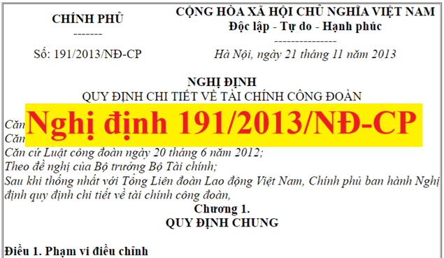

Nghị định 191/2013/NĐ-CP quy định chi tiết về tài chính công đoàn đối với nguồn thu kinh phí công đoàn và ngân sách nhà nước cấp hỗ trợ.
Nghị định 191/2013/NĐ-CP được ban hành ngày 21/11/2013, có hiệu lực từ 10/01/2014
Hiện nay Nghị định 191 vẫn còn hiệu lực
Hiện nay Nghị định 191 vẫn còn hiệu lực
Chi tiết về Nghị định 191/2013/NĐ-CP như sau:
NGHỊ ĐỊNH
Căn cứ Luật tổ chức Chính phủ ngày 25 tháng 12 năm 2001;QUY ĐỊNH CHI TIẾT VỀ TÀI CHÍNH CÔNG ĐOÀN Căn cứ Luật ngân sách nhà nước ngày 16 tháng 12 năm 2002; Căn cứ Luật công đoàn ngày 20 tháng 6 năm 2012; Theo đề nghị của Bộ trưởng Bộ Tài chính; Sau khi thống nhất với Tổng Liên đoàn Lao động Việt Nam, Chính phủ ban hành Nghị định quy định chi tiết về tài chính công đoàn,
Chương 1.
Điều 1. Phạm vi điều chỉnhQUY ĐỊNH CHUNG 1. Nghị định này quy định chi tiết về tài chính công đoàn đối với nguồn thu kinh phí công đoàn và ngân sách nhà nước cấp hỗ trợ. 2. Đối với nguồn thu đoàn phí công đoàn do đoàn viên công đoàn đóng thực hiện theo quy định của Điều lệ Công đoàn Việt Nam. 3. Đối với nguồn thu khác từ hoạt động văn hóa, thể thao, hoạt động kinh tế của công đoàn; từ đề án, dự án do Nhà nước giao; từ viện trợ, tài trợ của tổ chức, cá nhân trong nước và nước ngoài thực hiện theo quy định của pháp luật liên quan đến quản lý và sử dụng đối với từng khoản thu. Điều 2. Đối tượng áp dụng 1. Cơ quan, tổ chức, doanh nghiệp quy định tại Điều 4 Nghị định này. 2. Cơ quan, tổ chức, các cấp công đoàn, cá nhân có liên quan đến quản lý và sử dụng tài chính công đoàn theo quy định của Luật công đoàn. Điều 3. Nguyên tắc quản lý và sử dụng tài chính công đoàn 1. Công đoàn thực hiện quản lý, sử dụng tài chính công đoàn theo quy định của pháp luật và quy định của Tổng Liên đoàn Lao động Việt Nam. 2. Việc quản lý và sử dụng tài chính công đoàn phải bảo đảm nguyên tắc tập trung, dân chủ, công khai, minh bạch, có phân công, phân cấp quản lý, gắn quyền hạn và trách nhiệm của công đoàn các cấp. 3. Tổ chức công đoàn các cấp thực hiện công tác kế toán, thống kê, báo cáo, quyết toán tài chính công đoàn theo quy định của pháp luật về kế toán, thống kê. 4. Tổ chức công đoàn được giao quản lý, sử dụng tài chính công đoàn được mở tài khoản tại Kho bạc Nhà nước để phản ánh các khoản ngân sách nhà nước cấp hỗ trợ; được mở tài khoản tiền gửi tại ngân hàng để phản ánh các khoản thu, chi kinh phí công đoàn theo quy định của Luật công đoàn. 5. Kết thúc năm ngân sách, nguồn thu kinh phí công đoàn chưa sử dụng hết, được chuyển sang năm sau để tiếp tục sử dụng theo quy định; đối với nguồn ngân sách nhà nước cấp hỗ trợ, thực hiện theo quy định của Luật ngân sách nhà nước và các văn bản hướng dẫn Luật về khóa sổ ngân sách cuối năm.
Chương 2.
Điều 4. Đối tượng đóng kinh phí công đoànQUY ĐỊNH VỀ KINH PHÍ CÔNG ĐOÀN Đối tượng đóng kinh phí công đoàn theo quy định tại Khoản 2 Điều 26 Luật công đoàn là cơ quan, tổ chức, doanh nghiệp mà không phân biệt cơ quan, tổ chức, doanh nghiệp đó đã có hay chưa có tổ chức công đoàn cơ sở, bao gồm: 1. Cơ quan nhà nước (kể cả Ủy ban nhân dân xã, phường, thị trấn), đơn vị thuộc lực lượng vũ trang nhân dân. 2. Tổ chức chính trị, tổ chức chính trị - xã hội, tổ chức chính trị xã hội - nghề nghiệp, tổ chức xã hội, tổ chức xã hội - nghề nghiệp. 3. Đơn vị sự nghiệp công lập và ngoài công lập. 4. Doanh nghiệp thuộc các thành phần kinh tế thành lập, hoạt động theo Luật doanh nghiệp, Luật đầu tư. 5. Hợp tác xã, liên hiệp hợp tác xã thành lập, hoạt động theo Luật hợp tác xã. 6. Cơ quan, tổ chức nước ngoài, tổ chức quốc tế hoạt động trên lãnh thổ Việt Nam có liên quan đến tổ chức và hoạt động công đoàn, văn phòng điều hành của phía nước ngoài trong hợp đồng hợp tác kinh doanh tại Việt Nam có sử dụng lao động là người Việt Nam. 7. Tổ chức khác có sử dụng lao động theo quy định của pháp luật về lao động. Điều 5. Mức đóng và căn cứ đóng kinh phí công đoàn Mức đóng bằng 2% quỹ tiền lương làm căn cứ đóng bảo hiểm xã hội cho người lao động. Quỹ tiền lương này là tổng mức tiền lương của những người lao động thuộc đối tượng phải đóng bảo hiểm xã hội theo quy định của pháp luật về bảo hiểm xã hội. Riêng đối với đơn vị thuộc lực lượng vũ trang quy định tại Khoản 1 Điều 4 Nghị định này, quỹ tiền lương là tổng mức tiền lương của những cán bộ, công nhân viên chức quốc phòng, lao động làm việc hưởng lương trong các nhà máy, doanh nghiệp, đơn vị cơ sở trong Quân đội nhân dân; cán bộ, công nhân, viên chức, lao động làm việc hưởng lương trong các doanh nghiệp, cơ quan, đơn vị khoa học-kỹ thuật, sự nghiệp và phục vụ trong Công an nhân dân. Điều 6. Phương thức đóng kinh phí công đoàn 1. Cơ quan, đơn vị được ngân sách nhà nước bảo đảm toàn bộ hoặc một phần kinh phí hoạt động thường xuyên đóng kinh phí công đoàn mỗi tháng một lần cùng thời điểm đóng bảo hiểm xã hội bắt buộc cho người lao động. Kho bạc Nhà nước nơi cơ quan, đơn vị mở tài khoản giao dịch căn cứ giấy rút kinh phí công đoàn, thực hiện việc kiểm soát chi và chuyển tiền vào tài khoản tiền gửi của tổ chức công đoàn tại ngân hàng. 2. Tổ chức, doanh nghiệp đóng kinh phí công đoàn mỗi tháng một lần cùng thời điểm đóng bảo hiểm xã hội bắt buộc cho người lao động. 3. Tổ chức, doanh nghiệp nông nghiệp, lâm nghiệp, ngư nghiệp, diêm nghiệp trả tiền lương theo chu kỳ sản xuất, kinh doanh đóng kinh phí công đoàn theo tháng hoặc quý một lần cùng với thời điểm đóng bảo hiểm xã hội bắt buộc cho người lao động trên cơ sở đăng ký với tổ chức công đoàn. Điều 7. Nguồn đóng kinh phí công đoàn 1. Đối với cơ quan, đơn vị được ngân sách nhà nước bảo đảm toàn bộ kinh phí hoạt động thường xuyên, ngân sách nhà nước bảo đảm toàn bộ nguồn đóng kinh phí công đoàn và được bố trí trong dự toán chi thường xuyên hàng năm của cơ quan, đơn vị theo quy định của pháp luật về phân cấp quản lý ngân sách nhà nước. 2. Đối với cơ quan, đơn vị được ngân sách nhà nước bảo đảm một phần kinh phí hoạt động thường xuyên, ngân sách nhà nước bảo đảm nguồn đóng kinh phí công đoàn tính theo quỹ tiền lương làm căn cứ đóng bảo hiểm xã hội cho số biên chế hưởng lương từ ngân sách nhà nước và được bố trí trong dự toán chi thường xuyên hàng năm của cơ quan, đơn vị theo quy định của pháp luật về phân cấp quản lý ngân sách nhà nước. Phần kinh phí công đoàn phải đóng còn lại, đơn vị tự bảo đảm theo quy định tại Khoản 3 và 4 Điều này. 3. Đối với doanh nghiệp và đơn vị có hoạt động sản xuất kinh doanh, dịch vụ, khoản đóng kinh phí công đoàn được hạch toán vào chi phí sản xuất, kinh doanh, dịch vụ trong kỳ. 4. Đối với cơ quan, tổ chức, đơn vị còn lại, khoản đóng kinh phí công đoàn được sử dụng từ nguồn kinh phí hoạt động của cơ quan, tổ chức, đơn vị theo quy định của pháp luật.
Chương 3.
Điều 8. Các nội dung được ngân sách trung ương hỗ trợQUY ĐỊNH VỀ NGÂN SÁCH NHÀ NƯỚC CẤP HỖ TRỢ 1. Kinh phí đóng niên liễm cho các tổ chức quốc tế. 2. Trường hợp dự toán nguồn thu tài chính công đoàn không đảm bảo dự toán chi hoạt động thường xuyên hợp lý của hệ thống tổ chức công đoàn và hoạt động thực hiện quyền, trách nhiệm của công đoàn: Vào thời điểm lập dự toán ngân sách nhà nước hàng năm theo quy định của Luật ngân sách nhà nước, Tổng Liên đoàn Lao động Việt Nam xây dựng dự toán thu đối với các nguồn quy định tại các Khoản 1, 2 và 4 Điều 26 Luật công đoàn và dự toán chi thực hiện các nhiệm vụ quy định tại Khoản 2 Điều 27 Luật công đoàn theo chế độ, tiêu chuẩn, định mức chi tiêu chung của Nhà nước quy định đối với cơ quan hành chính sự nghiệp, gửi Bộ Tài chính thẩm định phần chênh lệch thiếu, tổng hợp và trình Chính phủ để trình Quốc hội quyết định hỗ trợ. 3. Kinh phí hoạt động thường xuyên của các đơn vị sự nghiệp công lập trực thuộc Tổng Liên đoàn Lao động Việt Nam theo quy định của pháp luật về quyền tự chủ, tự chịu trách nhiệm về thực hiện nhiệm vụ, tổ chức bộ máy, biên chế và tài chính đối với đơn vị sự nghiệp công lập. 4. Kinh phí thực hiện các nhiệm vụ khoa học và công nghệ do Tổng Liên đoàn Lao động Việt Nam trực tiếp thực hiện. 5. Kinh phí đào tạo bồi dưỡng cán bộ, công chức, viên chức đối với các cơ quan, đơn vị trực thuộc Tổng Liên đoàn Lao động Việt Nam, công đoàn ngành trung ương và công đoàn tổng công ty trực thuộc Tổng Liên đoàn Lao động Việt Nam. 6. Kinh phí thực hiện các chương trình mục tiêu quốc gia (nếu có). 7. Kinh phí thực hiện các nhiệm vụ do cơ quan nhà nước có thẩm quyền đặt hàng với Tổng Liên đoàn Lao động Việt Nam. 8. Kinh phí thực hiện nhiệm vụ đột xuất được cấp có thẩm quyền giao. 9. Kinh phí đối ứng thực hiện các dự án có nguồn vốn nước ngoài do Tổng Liên đoàn Lao động Việt Nam thực hiện, được cấp có thẩm quyền phê duyệt. 10. Chi đầu tư phát triển của Tổng Liên đoàn Lao động Việt Nam theo dự án được cấp có thẩm quyền phê duyệt. Điều 9. Các nội dung được ngân sách địa phương hỗ trợ 1. Kinh phí hoạt động thường xuyên của các đơn vị sự nghiệp công lập trực thuộc Liên đoàn Lao động địa phương theo quy định của pháp luật về quyền tự chủ, tự chịu trách nhiệm về thực hiện nhiệm vụ, tổ chức bộ máy, biên chế và tài chính đối với đơn vị sự nghiệp công lập. 2. Kinh phí thực hiện các nhiệm vụ khoa học và công nghệ do Liên đoàn Lao động địa phương trực tiếp thực hiện (nếu có). 3. Kinh phí đào tạo bồi dưỡng cán bộ, công chức, viên chức đối với Liên đoàn Lao động địa phương và công đoàn cấp trên cơ sở. 4. Kinh phí thực hiện các chương trình mục tiêu quốc gia do cơ quan nhà nước có thẩm quyền giao (nếu có). 5. Kinh phí thực hiện các nhiệm vụ do cơ quan nhà nước có thẩm quyền đặt hàng với Liên đoàn Lao động địa phương. 6. Kinh phí thực hiện nhiệm vụ đột xuất được cấp có thẩm quyền giao. 7. Chi đầu tư phát triển của Liên đoàn Lao động địa phương theo dự án được cấp có thẩm quyền phê duyệt. Điều 10. Quản lý, sử dụng kinh phí ngân sách nhà nước hỗ trợ 1. Kinh phí thuộc ngân sách cấp nào hỗ trợ thì phân bổ cho cơ quan, đơn vị thuộc công đoàn cấp đó thực hiện; không sử dụng ngân sách trung ương để hỗ trợ cho cơ quan, đơn vị thuộc công đoàn cấp dưới, trừ trường hợp quy định tại Khoản 2 Điều 8 Nghị định này. 2. Cơ quan, đơn vị được ngân sách nhà nước hỗ trợ phải thực hiện sử dụng kinh phí theo đúng chế độ, tiêu chuẩn, định mức do cơ quan nhà nước có thẩm quyền quy định; bảo đảm đúng mục đích, tiết kiệm, có hiệu quả và có đủ hồ sơ, chứng từ thanh toán; chịu sự kiểm tra, kiểm soát của cơ quan tài chính, Kho bạc Nhà nước trong quá trình thực hiện dự toán ngân sách được giao. 3. Việc lập dự toán, chấp hành, kế toán và quyết toán kinh phí ngân sách nhà nước hỗ trợ thực hiện theo quy định của pháp luật về ngân sách nhà nước và kế toán, thống kê.
Chương 4.
ĐIỀU KHOẢN THI HÀNH Điều 11. Hiệu lực thi hành 1. Nghị định này có hiệu lực thi hành từ ngày 10 tháng 01 năm 2014. Riêng quy định về mức đóng phí công đoàn tại Điều 5 Nghị định này được thực hiện từ ngày Luật công đoàn có hiệu lực thi hành. 2. Bãi bỏ các văn bản sau đây: a) Quyết định số 133/2008/QĐ-TTg ngày 01 tháng 10 năm 2008 của Thủ tướng Chính phủ về việc trích nộp kinh phí công đoàn đối với các doanh nghiệp có vốn đầu tư nước ngoài và văn phòng điều hành của phía nước ngoài trong hợp đồng hợp tác kinh doanh; b) Thông tư liên tịch số 119/2004/TTLT/BTC-TLĐLĐVN ngày 08 tháng 12 năm 2004 của Bộ Tài chính và Tổng Liên đoàn Lao động Việt Nam hướng dẫn trích nộp kinh phí công đoàn; Thông tư số 17/2009/TT-BTC ngày 22 tháng 01 năm 2009 của Bộ Tài chính hướng dẫn việc trích nộp và sử dụng kinh phí công đoàn đối với doanh nghiệp có vốn đầu tư nước ngoài và văn phòng điều hành của phía nước ngoài trong hợp đồng hợp tác kinh doanh. Điều 12. Trách nhiệm tổ chức thực hiện 1. Cơ quan, tổ chức, doanh nghiệp có trách nhiệm: a) Đóng kinh phí công đoàn đầy đủ, đúng thời hạn cho tổ chức công đoàn theo đúng quy định tại Nghị định này và quy định của Tổng Liên đoàn Lao động Việt Nam về phân cấp thu, phân phối nguồn thu kinh phí công đoàn; b) Cung cấp đầy đủ, chính xác thông tin, tài liệu có liên quan đến trách nhiệm đóng kinh phí công đoàn khi có yêu cầu của tổ chức công đoàn, cơ quan nhà nước có thẩm quyền. 2. Tổng Liên đoàn Lao động Việt Nam có trách nhiệm: a) Xây dựng và ban hành tiêu chuẩn, định mức, chế độ chi tiêu tài chính công đoàn trên cơ sở vận dụng định mức, chế độ do Nhà nước quy định để bảo đảm đáp ứng yêu cầu quản lý trong hệ thống tổ chức công đoàn; quy định phân cấp thu, phân phối nguồn thu và quản lý nguồn thu (đoàn phí, kinh phí công đoàn, các nguồn thu khác theo quy định) để thực hiện trong hệ thống tổ chức công đoàn; b) Xây dựng và ban hành định mức phân bổ dự toán chi hoạt động thường xuyên đối với các đơn vị trực thuộc và tổ chức công đoàn các cấp trên cơ sở vận dụng định mức phân bổ dự toán chi quản lý hành chính cho các Bộ, cơ quan ngang Bộ, cơ quan thuộc Chính phủ, các cơ quan khác ở Trung ương theo quy định của Thủ tướng Chính phủ để bảo đảm công khai, minh bạch trong phân bổ dự toán, quản lý và sử dụng tài chính công đoàn; c) Chỉ đạo tổ chức công đoàn các cấp quản lý, sử dụng kinh phí công đoàn theo đúng quy định; chủ trì, phối hợp với cơ quan tài chính, thuế, thanh tra lao động cùng cấp kiểm tra, thanh tra việc thực hiện đóng kinh phí công đoàn của các cơ quan, tổ chức, doanh nghiệp; kiến nghị các cơ quan chức năng xử lý vi phạm pháp luật về đóng kinh phí công đoàn. 3. Bộ Tài chính có trách nhiệm bố trí ngân sách trung ương hỗ trợ tài chính công đoàn theo quy định tại Điều 8 Nghị định này. 4. Chủ tịch Ủy ban nhân dân tỉnh, thành phố trực thuộc Trung ương có trách nhiệm bố trí ngân sách, địa phương hỗ trợ tài chính công đoàn theo quy định tại Điều 9 Nghị định này theo quy định của pháp luật về phân cấp quản lý ngân sách nhà nước. Điều 13. Trách nhiệm thi hành Các Bộ trưởng, Thủ trưởng cơ quan ngang Bộ, Thủ trưởng cơ quan thuộc Chính phủ, Chủ tịch Ủy ban nhân dân các tỉnh, thành phố trực thuộc trung ương chịu trách nhiệm thi hành Nghị định này./.
|
